轻食谱食材图标审核表
每个食材一个独立图标；重点检查是否一眼能对应食材、同类是否能区分、风格是否统一。
鸡胸肉
chicken-breast
高蛋白 · cutlet
鸡蛋
egg
高蛋白 · egg
虾仁
shrimp
高蛋白 · shrimp
鲈鱼
seabass
高蛋白 · whole-fish
三文鱼
salmon
高蛋白 · salmon
牛肉
beef
高蛋白 · steak
豆腐
tofu
高蛋白 · tofu
希腊酸奶
greek-yogurt
乳制品 · yogurt
番茄
tomato
蔬菜 · tomato
西兰花
broccoli
蔬菜 · broccoli
青椒
green-pepper
蔬菜 · bell-pepper
胡萝卜
carrot
蔬菜 · carrot
黄瓜
cucumber
蔬菜 · cucumber
生菜
lettuce
蔬菜 · lettuce
菠菜
spinach
蔬菜 · spinach
蘑菇
mushroom
蔬菜 · mushroom
玉米
corn
主食 · corn
糙米
brown-rice
主食 · rice
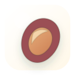
红薯
sweet-potato
主食 · sweet-potato
燕麦
oats
主食 · oats
全麦吐司
whole-wheat-toast
主食 · toast
牛油果
avocado
优质脂肪 · avocado
杏仁
almond
优质脂肪 · almond
香蕉
banana
水果 · banana
猪肉
pork
肉蛋海鲜 · pork
排骨
pork-ribs
肉蛋海鲜 · ribs
鸡腿肉
chicken-thigh
肉蛋海鲜 · drumstick
鸭胸肉
duck-breast
肉蛋海鲜 · duck
鳕鱼
cod
肉蛋海鲜 · cod-fillet
金枪鱼
tuna
肉蛋海鲜 · tuna-steak
扇贝
scallop
肉蛋海鲜 · scallop
鱿鱼
squid
肉蛋海鲜 · squid
蟹肉
crab
肉蛋海鲜 · crab
小青菜
bok-choy
蔬菜 · bok-choy
白菜
cabbage
蔬菜 · cabbage
花菜
cauliflower
蔬菜 · cauliflower
西葫芦
zucchini
蔬菜 · zucchini
茄子
eggplant
蔬菜 · eggplant
土豆
potato
蔬菜 · potato
洋葱
onion
蔬菜 · onion
大蒜
garlic
蔬菜 · garlic
生姜
ginger
蔬菜 · ginger
芹菜
celery
蔬菜 · celery
芦笋
asparagus
蔬菜 · asparagus
南瓜
pumpkin
蔬菜 · pumpkin
豌豆
pea
蔬菜 · pea-pod
米饭
white-rice
主食 · rice-bowl
面条
noodles
主食 · noodles
意面
pasta
主食 · pasta
藜麦
quinoa
主食 · quinoa
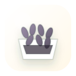
黑米
black-rice
主食 · black-rice
荞麦
buckwheat
主食 · buckwheat
年糕
rice-cake
主食 · rice-cake
苹果
apple
水果 · apple
橙子
orange
水果 · orange
葡萄
grape
水果 · grape
蓝莓
blueberry
水果 · blueberry
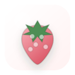
草莓
strawberry
水果 · strawberry
猕猴桃
kiwi
水果 · kiwi
芒果
mango
水果 · mango
菠萝
pineapple
水果 · pineapple
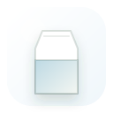
牛奶
milk
乳制品 · milk
芝士
cheese
乳制品 · cheese
茅屋芝士
cottage-cheese
乳制品 · cottage-cheese
豆浆
soy-milk
豆制品 · soy-milk
毛豆
edamame
豆制品 · edamame
黑豆
black-bean
豆制品 · black-bean
鹰嘴豆
chickpea
豆制品 · chickpea
核桃
walnut
坚果 · walnut
腰果
cashew
坚果 · cashew
花生
peanut
坚果 · peanut
奇亚籽
chia-seed
坚果 · chia-seed
橄榄油
olive-oil
调味品 · oil
酱油
soy-sauce
调味品 · soy-sauce
醋
vinegar
调味品 · vinegar
黑胡椒
black-pepper
调味品 · peppercorn
辣椒
chili
调味品 · chili
小葱
green-onion
调味品 · green-onion